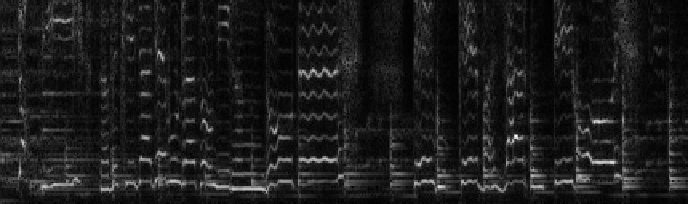

Final Project: The Shazam Algorithm for Audio Fingerprinting (100 Points)
Chris Tralie
Overview / Logistics
We have now reached the climax of the course! This assignment is a direct followup to the last assignment on basketball hashing. Now that we have a hash table implementation, we're going to use it for an even more exciting task of quickly identifying a song from a short (and possibly degraded) audio clip of that song. We will be implementing the so-called "Shazam algorithm," which you can read more about in this paper, and which I have broken down with audio examples at this link. In a nutshell, we will be building something called an audio fingerprint, which can be used to identify songs from short clips of audio.
The Design Is Yours!
I am giving you the freedom to design the code any way you want in this assignment, so you should take some time to plan out what you're going to do before you start coding. Think about what classes you're going to write, what entry point programs with mains you'll write to run your code, and how everything will fit together. Your code should be modular, reusable, and well encapsulated.
Summative Learning Objectives
- Design and implement code that uses object oriented principles
- Use multiple classes together in concert to accomplish a task
- Use hash tables to organize and find data quickly
- Manipulate 2D arrays in C++
- Manage dynamic memory and object references in C++
- Implement audio features for content-based music information retrieval
Background
Click here to view background notes on the algorithm you will be implementing.
What to submit
When you are finished, submit a .zip file with your code (not including the database) to canvas, as well as a README file explaining a brief overview of your code files and the design decisions you made.
Suggested Timeline
- By Tuesday 4/26, you should be finishing up computing anchors
- By Friday 4/29, you should be finishing up computing fingerprints
- By Monday 5/2, you should be finished integrating your hash map code from homework 5 into your codebase
- By Wednesday 5/3, you should have a data structure setup to accommodate a database where multiple songs have the same fingerprint
- By Monday 5/9, you should be at the stage where you are able to compile a list of songs that have fingerprints in common with a query song, and you should be on your way to organizing histograms of timing offsets between your query and the database songs for each song
- Final deadline on Friday 5/13!
Starter Code / Utilities
You can obtain the code for this assignment with
git clone --recursive https://github.com/ursinus-cs174-s2022/FinalProject_Shazam.git
You'll have to design all of the code to do the Shazam algorithm yourself, but I've started you off with utilities for loading audio and computing and plotting audio spectrograms. To see how these all work together, have a look at the code in plotSpectrogram.cpp
Audio spectrograms
As an example of an audio spectrogram, let's say we wanted to do an STFT on the example query "despacitoClean.wav" provided with this code, using a window length of 1024, a hop length of 512, and a cutoff of 128 frequency bins. Then we'd run this:
Code has been provided with your assignment to generate spectrograms from audio clips. For example, if we run the following code
It will yield this image

Have a look at plotSpectrogram.cpp for an example of how to load in audio and construct a spectrogram with the provided code.
Debugging by Plotting
I am a big proponent of debugging with visual output. As you're going along and computing anchors and fingerprints, I would highly recommend plotting them on examples to make sure your code is working properly. You can use the SimpleCanvas library that we've been using with all of the other assignments/labs involving images. Documentation for SimpleCanvas can be found at this link. Just note that the spectrograms are actually plotted upside down! So you may have to flip your anchors/fingerprints.
As a snippet to get you started, here's some code that computes a spectrogram on a 1D array samples with N audio samples
Precomputed Fingerprints
The starter code comes with fingerprints from 8 full length songs using the following parameters for the spectrogram
win = 1024hop = 512maxBin = 128
and the following parameters for the anchors
freqWin = 8int timeWin = 6
and the following parameters for the fingerprints
-
dCenter = 86 -
width = 50 -
height = 21
To make sure your queries are compatible with these examples, you should use the same parameters for the spectrograms when computing new fingerprints.
The 8 precomputed songs can be found in the folder Database. They are stored in plain text files with the following conventions:
- The first line is the name of the artist
- The second line is the name of the song
- Every subsequent line contains a fingerprint formatted into a hash code, followed by the window index at which that fingerprint occurs in the song
For example, the first 10 lines of 0.txt look like:
The time index of the queries is taken to be the left anchor of the fingerprint to be consistent with the database I have setup.
Stress Testing
You should start by making sure you can correctly identify the given 10 second clips in example queries among the 8 examples in this database. Once you're confident your code is working well, you can make the problem harder and see if you can identify those same clips among a database of 275 songs, which can be downloaded at this link.
Hash Maps
Code has not been provided for this, but when you're ready to look up queries in the database, you should splice in your hash map code from homework 5 to help you look up fingerprints quickly.
Programming Tasks
Main Program Specification
Your code should culminate in a program called query, which takes two command line arguments:
- A path to a query audio file to be identified
- A path to a folder containing a database of precomputed fingerprints
As an example, if you typed in
Your program should output Luis Fonsi ft Daddy Yankee - Despacito
Efficiency
Your program should be very fast on the database of just 8 songs! Even on the database of 275 songs, my code only takes about 10 seconds to load the entire database, and the query is nearly instantaneous. The key to making this work efficiently is to use a hash table. You can use as many buckets as there are unique hash codes, which is roughly 17 million.
Debugging Tools
Of course, you'll probably want to write several other programs to help you test as you go along. Below are a few suggestions:
- A program that computes and plots the constellation for a particular audio clip (note that plotting is upside down)
- A program that computes and plots the fingerprints for a particular audio clip
- A program that parses one of the database example text files and loads its fingerprints into a hash map
- A program that prints out information about histograms that you make of the difference between a fingerprint's window index in the database and the fingerprint's window index in the audio.
- ...other things to help you debug?!
Going Further!
At this point, you have a fully functional basic implementation of audio fingerprinting for content-based music retrieval. This is not required, but you should try it on your own music! See if you can add a song to the database and query it with a clip. Note that the parameters are setup so that the database is expecting single channel audio sampled at 22050hz in the .wav file format. You can use Audacity to do the conversion. Questions to ask yourself as you go include:
- How much audio does it seem like you need to do a robust identification?
- How noisy or distorted does can the audio be before the identification fails?
- Does this work on different versions of the song (e.g. cover songs)? Why do you think that might be?
Beyond that, you can also write code to create clips to fool the Shazam algorithm, like I did in http://www.beepytunes.com/. This is as simple as creating a tune that has short time cosines at every anchor location in the constellation.
Grading Rubric
Below is how I will score your final submissions
To Receive an A
- Each item required for a grade of B is included
- Classes use information hiding (public/private/protected) and a clear separation between implementation (cpp files) and specification (h files)
- The program runs without memory leaks
To Receive a B
- Each item required for a grade of C is included
- Fingerprints and database song entries are well-encapsulated within class structures
- Code has been reused where appropriate, using object oriented paradigms
- Code is clean and well-documented
To Receive a C
- Each item required for a grade of D is included
- The query program returns the correct songs, as per the specification
- The query program runs efficiently, as per the specification
To Receive a D
-
It is possible to build your
queryprogram from scratch by typingmakein the command line -
Your
queryprogram successfully computes anchors, fingerprints, and hash codes for the fingerprints -
Your
queryprogram is able to load all of the fingerprints from a database into a hash map